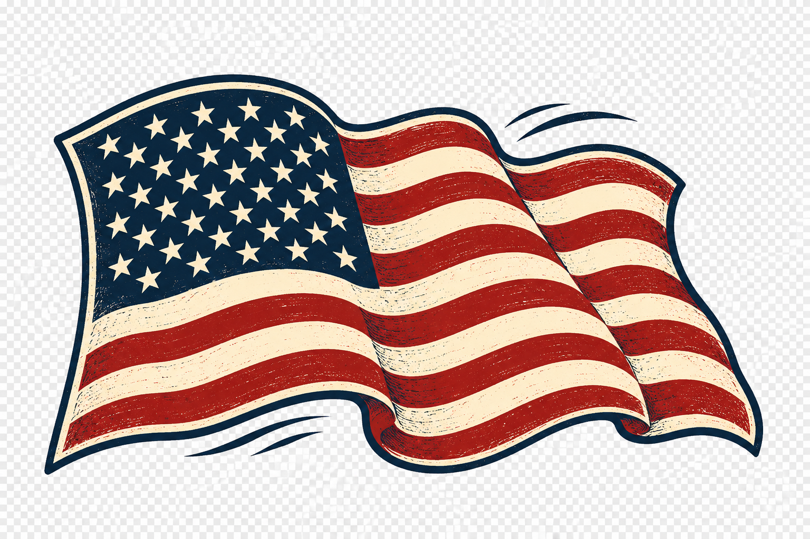

Stars & Stripes is a custom American flag hat idea with a relaxed, worn-in look. A gently waving flag, vintage distressing, deep navy, warm cream, and muted red make the graphic easy to recognize while keeping the washed denim cap itself in focus.
A vintage American flag print for a washed denim cap
The compact flag graphic is designed for the front crown of a classic baseball cap. Its simplified colors and clear silhouette help it read at a glance, while the distressed texture pairs naturally with washed denim. This makes a casual patriotic baseball cap that works with tees, denim, and everyday summer outfits.

Designed for the actual VIBEYA washed denim baseball cap
The VIBEYA cap is a washed cotton denim baseball hat with a curved brim and adjustable back. The available product colors are Washed Black, Washed Khaki, and Washed Gray. This design is placed on the front crown only; the brim, side panels, and back remain plain.
Personalize a baseball cap on VIBEYA
Visit the custom washed denim baseball cap product page to choose a color and make the design yours. You can upload your own image or describe a new idea with a text prompt, preview the design on the product, and place your order when the result looks right.
- Choose Washed Black, Washed Khaki, or Washed Gray on the cap product page.
- Upload your artwork or describe a custom American flag hat design with a prompt.
- Check the front-crown print placement in the product preview, then order your personalized baseball cap.
Create a compact vintage American flag graphic for the front crown of a washed denim baseball cap. Show a softly waving flag with a deep navy field, warm cream stars and stripes, muted brick red, a thin dark outline, and subtle screen-print distressing. Keep the graphic bold and readable at a small size. Print on the front crown only; leave the brim, side panels, and back plain. No words, logos, background, or mockup.
Frequently asked questions
Where does the American flag design print?
The artwork is placed on the front crown of the cap. The brim and side panels remain plain.
What colors can I choose?
The product page lists Washed Black, Washed Khaki, and Washed Gray. Check the live product selector for current availability.
Can I use my own artwork or a different prompt?
Yes. Upload an image or describe your own design on the product page, then preview it on the cap before ordering.
Are these gallery images the finished cap photographs?
The gallery shows styled visual previews of the design. Use the product-page preview to check your selected cap color and artwork placement before placing an order.